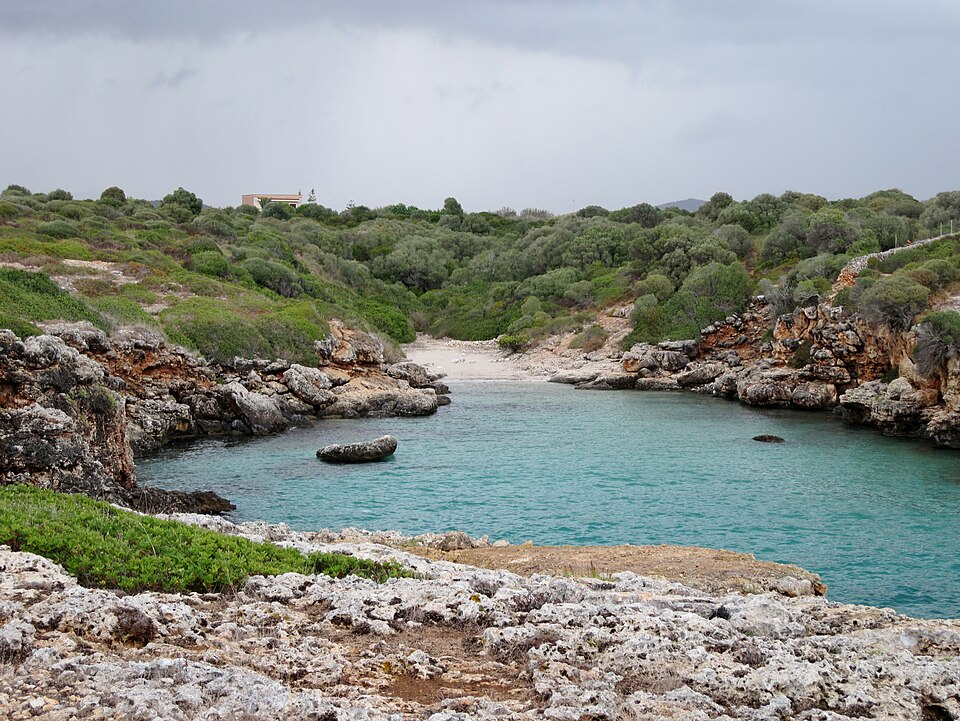

Started collecting data from samples as a laboratory technician :microscope:, I graduated as BSc environmental scientist understanding the value of making informed-decisions towards a sustainable future. After this, I obtained a MSc in Geographical Information Systems and Project Management and a Master of Education in Biology and Geology .
A two-year joint-degree Master of Science programme taught by geo-information experts from four
universities in the Netherlands: University of Twente/ITC Enschede, TU Delft, Utrecht University and Wageningen University.
The GIS tools included ESRI products like ArcGIS and programming languages like PostGIS, R, Python or SparQL.
Topic: MSc in GIS and Project Management
Internship graded 9/10:Published a full paper for the Agile 2025 conference (Dreden) working for HeiGIT (Heidelberg) with the university supervision from ITC Enschede.
Thesis graded 8.5/10: Published a conference paper for AgEng2024, apart from the master thesis with the university supervision from Wageningen University.“Multi-Object Tracking livestock method driven by foundation models in computer vision using UAV videos”.
A one-year Master of Education programme in Spain’s largest public university focused on distance learning. This official Master’s degree qualifies students to work as teachers of Secondary Education, Baccalaureate, Vocational Training and Language Teaching.
Topic: Teaching Biology and Geology
Internship graded 9.7/10: Worked in Biology and Geology classes for 5 months at
IES Platero Green School (Málaga).
Thesis graded 9.3/10: Introduced carbon footprint system from MITECO using PostGIS and R with the master thesis “Eligiendo un futuro más sostenible a través de la huella de carbono y R/SQL en el aula”.
A four-year Bachelor of Sciences programme in Environmental Sciences where graduates are prepared to work in fields such as environmental quality management systems, consultancy and impact assessment, industrial technology or natural environment management.
Topic: Environmental Sciences
Dissertation graded 10/10: I Used R and the library OpenAir, with the invaluable assistance from
Fernando Follos to analyse the effect of air pollutants on health, as well as comparing their levels in Edinburgh before and after COVID19. The title of the dessertation is “Contaminantes atmosféricos: Sus mecanismos de acción molecular y sus niveles durante el confinamiento COVID 19 en Edimburgo”.
Work experience
¹Heidelberg
2024- Intern Geo-Analytics
HeiGIT: Heidelberg Institute for Geoinformation Technology
When I joined the Geoinformation for Humanitarian Aid we decided to design and implement a new workflow to evaluate connectivity of the road systems. I started to learn more about PostgreSQL and Pgrouting ending up with a methodology based on scripts and a published paper.
Conducted network analysis of road systems from OpenStreetMap, focusing on the impact of floodings on their resilience and accesibility to hospitals using PostGIS and R.
Designed data processing workflows, automating steps using PostGIS and R scripts integrated with GIS software (QGIS) for spatial analysis.
Published a full paper in Agile 2025 conference (Dresden)
²Málaga
2023- Intern Biology and Geology teacher
Platero Green School
During my two-year full-time MSc in GIS and Project Management, I also enrolled in a one-year full-time Master in Education (Biology and Geology). During my internship in Platero Green School, I had the pleasure of working alongside Francisco Fernández Castro and strengthened my organization skills by successfully completing both masters
Strong communication skills developed by teaching science clearly to students, parents, and colleagues across varied contexts.
Communicate biology and geology concepts effectively to a range of audiences, both in writing and speaking.

³Palma de Mallorca
2022- Environmental and Quality Technician
Air Europa
After moving on from a high vocational training as laboratory technician to a recent graduate in Environmental Sciences, I moved to Palma de Mallorca to work as an Environmental and Quality Technician. In this role I participated in external audits including ISO 19001, 14001, and EMAS by AENOR, all of them were successfully passed.
Strong analytical and problem-solving skills evaluating more than 20 indicators across 16 work centers and a total number of 3.145 employers
Solid knowledge in MS Office including excel to manage pivot tables, functions and managed data workflows with Qlik or PowerBI
⁴Edinburgh
Before 2022 - Jobs abroad
Seasonal jobs
When the young unemployment⁵ rate reached a 70% in Andalucía, I wanted to get a job, so I moved abroad to Edinburgh (UK-Scotland). I found my first job after 2 weeks. From then on, my first employer and colleagues kept referring me to other roles year after year, grounded in the mutual trust that came from how we worked together.
Fluent in English through daily work and life in the UK, complemented by the Cambridge Certificate of Advanced English (CAE).
Clear communication and collaborative work within international teams, developed in fast-paced environments.
Other courses
Code to create the table
library(tidyverse)courses_certificates <-read.csv("/home/ricardors/rrs_website/rruiz-s.github.io/posts/cv_certificates.csv") |>mutate(link_url =paste0('<a href="', link, '">link</a>')) |>select(-c(link,id)) # an index makes the id column redundant and link is formatted properly using HTML in link_urllibrary(DT) DT::datatable(courses_certificates, escape=FALSE, filter="top",options =list(pageLength=5 ))